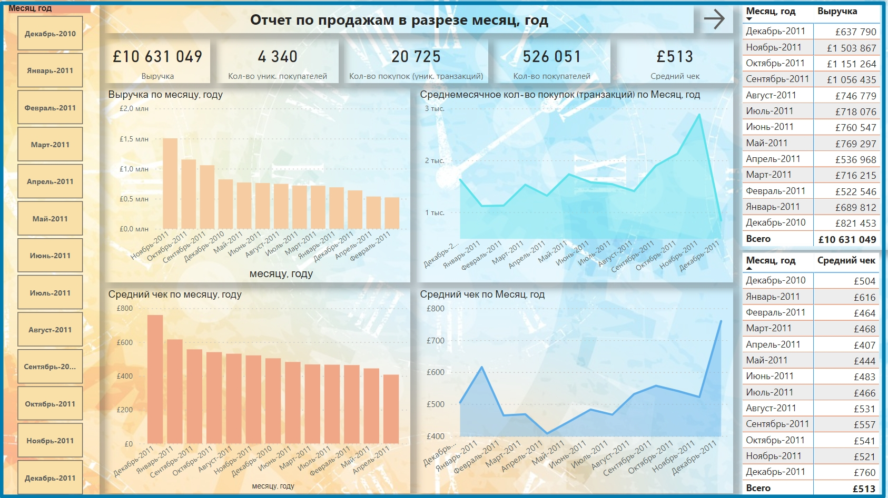

Исследование продаж британского e-commerce магазина TATA (поиск инсайтов, составление рекомендаций стейкхолдерам, построение дашборда).
Цель проекта - провести исследование данных и сделать выводы на основе построенных дашбортов.
Следующие задачи:
- Определение основных метрик для выбранного круга стейкхолдеров.
- Описание, очистка данных с помощью Python и преобразование данных для расчета метрик и построения дашбортов в Power Bi.
- Описание полученных дашбортов, формирование выводов и рекомендаций..
Работа была выполнена с помощью следующих инструментов: Python, Power Query, Power Pivot, Power View.
В данном отчете для британского e-commerce магазина TATA были посчитаны следующие метрики, которые помогли бы стейкхолдерам, а именно, топ-менеджменту компании, отделу маркетинга и отделу закупок товара принимать решения:
- выручка;
- количество покупок (уникальных транзакций);
- количество посетителей;
- количество уникальных покупателей;
- среднемесячное количество покупок (транзакций);
- средний чек;
- общее количество продаж по каждой позиции товара.
Предобработка и исследование данных производились с помощью инструментов анализа данных Python и Power Bi.
В результате исследование состоит из трех отчетов: Отчет 1, Отчет 2, Отчет 3. Переключаться можно с помощью кнопки «Стрелка». Рассмотрим, что показывает каждый из них.
"Отчет 1": отчет по продажам в разрезе месяц, год
В представленном отчете в верхней его части происходит расчет показателей, таких как, выручка, количество уникальных покупателей, количество покупок, количество покупателей, средний чек за весь период работы магазина, а также с возможностью выбора месяц и год.
В средней части отчета представлены две гистограммы с группировкой, и две диаграммы с областями. Гистограммы показывают распределение выручки и среднего чека, а диаграммы среднемесячное количество покупок и средний чек в разрезе месяц-год. В правой части отчета расположены две таблицы, рассчитывающие выручку и средний чек в разрезе месяц, год.
Таким образом, данный «Отчет 1» поможет руководителям увидеть основные показатели как за весь период времени, так и в разрезе месяц, год, а также на основе анализа установить, что месяцем с самым высоким общим объемом продаж в 2011 году был ноябрь, за ним следовали октябрь и сентябрь, в то время как в апреле и феврале общий объем продаж был наименьшим. Месяцем же с самым высоким средним чеком в 2011 году был декабрь, за ним следовали январь и сентябрь, в то время как в мае и апреле средний чек был наименьшим.
"Отчет 2": отчет по продажам в разрезе страны
В данном отчете представлены 4 основных визуальных элемента. Слева наверху расположена карта со странами и значениями выручки для каждой страны. Три остальных визуальных элемента – это гистограммы с группировкой. Справа наверху гистограмма показывает распределение количества покупателей по странам, слева внизу показывает распределение выручки по странам, а справа внизу - количество уникальных покупателей по странам. Для повышения информативности гистограммы имеют возможность ручного изменения диапазона оси. Распределение выручки по странам показывает, как распределилась выручка магазина по странам. Как на карте, так и на диаграмме видно, что основная выручка порядка 9 млн £ приходится на страну Англию (United Kingdom). Гистограммы «Количество покупателей по странам» и «Количество уникальных покупателей по странам» показывают, как распределилось количество покупателей и количество уникальных покупателей по странам. Из отчета, видно, что самое большое количество покупок было совершено в Англии: порядка 481 тыс. штук, причем уникальное количество покупателей было 3,9 тыс. штук.
Таким образом, данный «Отчет 2» поможет руководителям увидеть сколько выручки приносит та или иная страна, какое количество покупателей приходится на каждую из них. А также отчет показывает руководителям отдела маркетинга компании в каких странах необходимо увеличить рекламную компанию для привлечения большего трафика иностранных покупателей.
"Отчет 3": отчет по продажам товара, распределение выручки по дням недели, часам, предобработка данных
Данный отчет содержит 3 гистограммы и 4 карточки, которые были рассчитаны для предобработки данных. Рассмотри 3 гистограммы. Верхняя слева показывает какой продукт продавался больше всего. На этой диаграмме представлено распределение общего количества продаж по каждой позиции товара. На основе анализа видно, что следующие товары продаются больше всего на веб-сайте компании: поделка из бумаги («paper craft»), маленькая птичка («little birdie»), в количестве около 81 тыс. штук. Также есть товары, которые практически не продаются, например, «wire flower t-light holder».
Диаграмма «Выручка по дню недели» показывает распределение выручки в зависимости от дня недели. Из отчета видно, что по субботам не было продаж, скорее всего магазин не работал. Например, из отчета видно, что днем недели с самым высоким общим объемом продаж был четверг с размером общей выручки 2,20 млн £.
Гистограмма «Выручка по часам» показывает распределение выручки по времени.Основная плотность выручки наблюдается в промежуток с 12:00 до 16:00, возможно, это идеальное время для показа рекламы этой компанией электронной коммерции.
Таким образом, данный «Отчет 3» поможет руководителям увидеть общее количество продаж по каждой позиции товара и выявить какой товар имеет более высокий спрос, что поможет в дальнейшем сделать акцент какую продукцию стоит закупать. А также отчет показывает руководителям отдела маркетинга компании интервал времени для показа рекламы этой компанией электронной коммерции, и дни недели, в которые стоило бы проводить какие-либо акции, мотивирующие к покупке.
Выводы и рекомендации
Согласно проведенному анализу и представленному выше отчету можно выделить следующие важные моменты и рекомендации.
Выводы:
- За весь период работы британского e-commerce магазина TATA общая выручка составила порядка 10 млн 631 тыс. £ (Фунт стерлингов), средний чек – 513 £, количество покупок (уникальных транзакций) за весь период составил 20 725, при этом количество уникальных покупателей – 4 340 штук, а количество всех неуникальных покупателей – 526 051 штук.
- Месяцем с самым высоким общим объемом продаж в 2011 году был ноябрь, за ним следовали октябрь и сентябрь, в то время как в апреле и феврале общий объем продаж был наименьшим. Что касается 2010 года, данные были доступны только за декабрь.
- Месяцем с самым высоким средним чеком в 2011 году был декабрь, за ним следовали январь и сентябрь, в то время как в мае и апреле средний чек был наименьшим.
- Основная выручка порядка 9 млн £ приходится на страну Англию (United Kingdom). Второе место по выручке - около 0,3 млн £ занимает Нидерланды (Netherlands), затем Ирландия чуть более 0,2 млн £.
- Самое большое количество покупок было совершено в Англии: порядка 481 тыс. штук, причем уникальное количество покупателей было 3,9 тыс. штук. Второе место по количеству покупателей общих и уникальных заняла Германия, хотя по выручке она заняла четвертое место.
- Следующие товары продаются больше всего на веб-сайте компании: поделка из бумаги («paper craft»), маленькая птичка («little birdie»), в количестве около 81 тыс. штук. Также есть товары, которые практически не продаются, например, «wire flower t-light holder».
- Основная плотность выручки наблюдается в промежуток с 12:00 до 16:00, возможно, это идеальное время для показа рекламы этой компанией электронной коммерции.
- По субботам продаж не было, скорее всего магазин не работал. Днем недели с самым высоким общим объемом продаж был четверг с размером общей выручки 2,20 млн £, далее вторник (2,18 млн £). В то время как в воскресенье и понедельник общий объем продаж был наименьшим: соответственно 0,81 млн £ и 1,78 млн £.
Рекомендации:
- В апреле и феврале необходимо проводить какую-либо маркетинговую акцию, мотивирующую клиентов к покупке.
- В мае и апреле необходимо проводить какую-либо маркетинговую акцию от определенной суммы покупок, чтобы увеличить средний чек.
- Необходимо увеличить рекламную компанию в других странах для привлечения большего трафика иностранных покупателей.
- Отделу закупок нужно сделать акцент на закупку товара, который имеет более высокий спрос, и с помощью акционных мероприятий продавать товар с низким спросом.
- В промежуток с 12:00 до 16:00 увеличить показ рекламы компанией электронной коммерции, так как с большей вероятностью клиенты будут доступны во время перерыва и с большей вероятностью будут пользоваться своими мобильными устройствами или компьютерами в эти часы.
- По воскресеньям и понедельникам стоила бы проводить какие-либо акции, мотивирующие к покупке.
Спасибо за ваше внимание и интерес к моему проекту!
Вопросы и комментарии, пожалуйста, пишите на почту sabrina.agapova86@yandex.ru. Обращайтесь, если заинтересовала полная версия исследования и дашбортов.